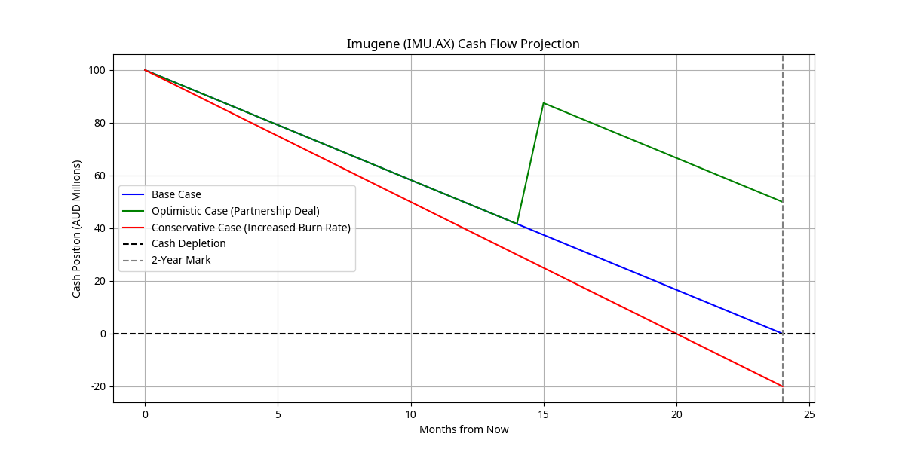
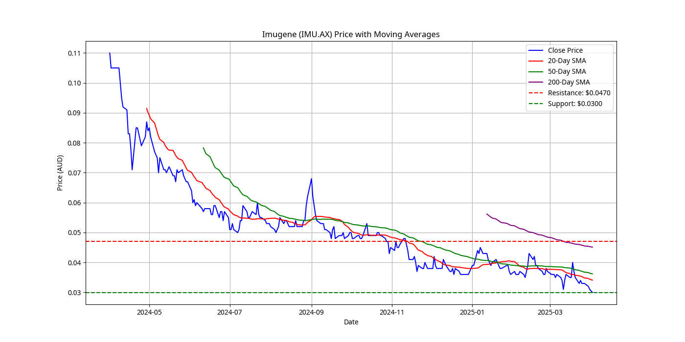
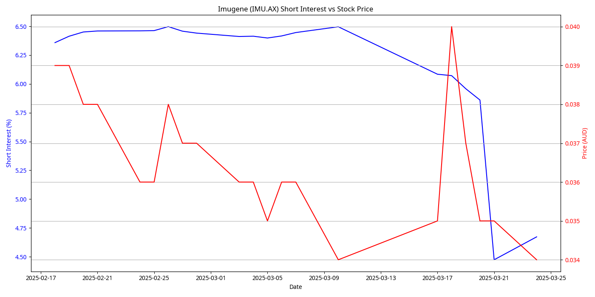
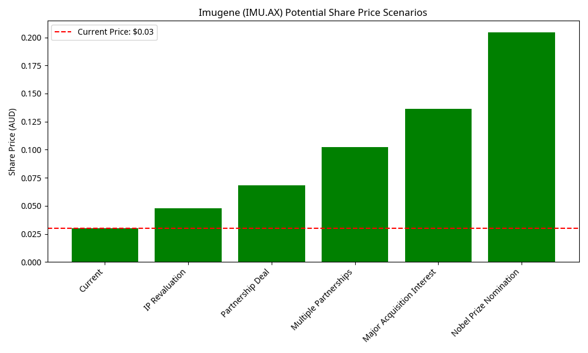
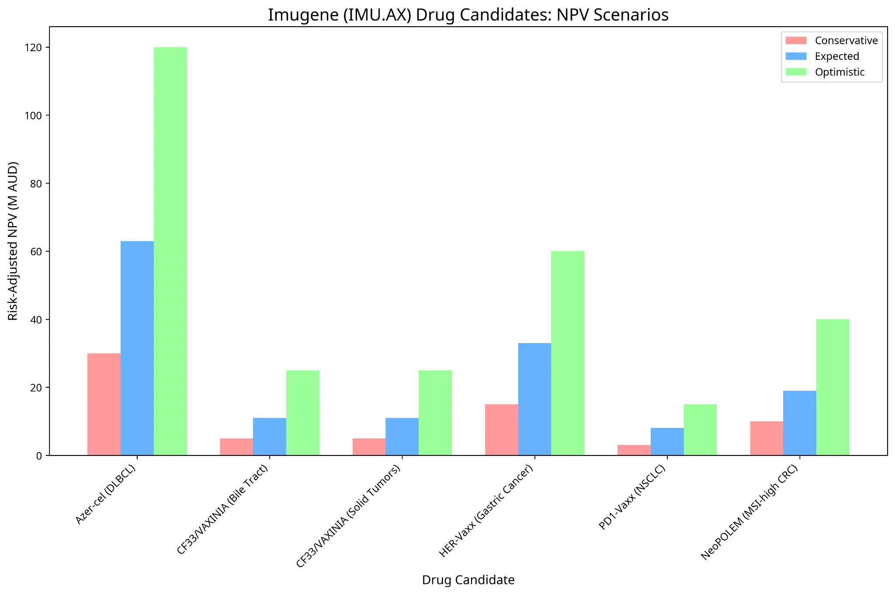
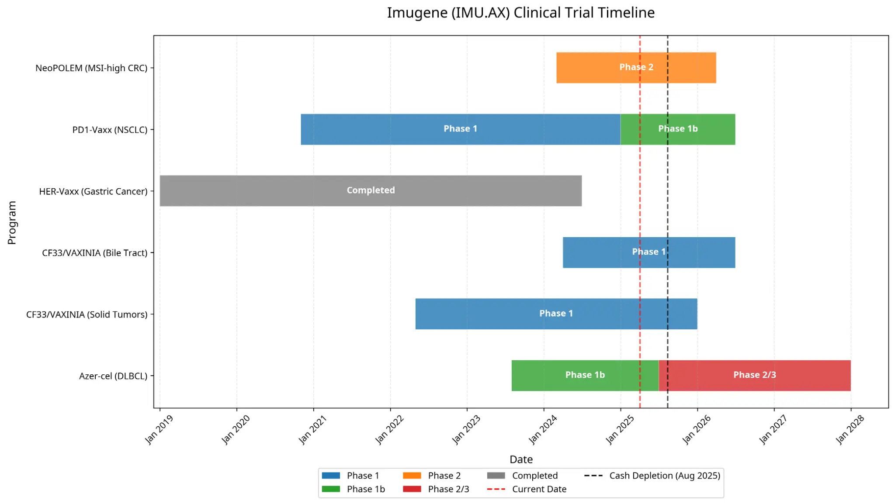
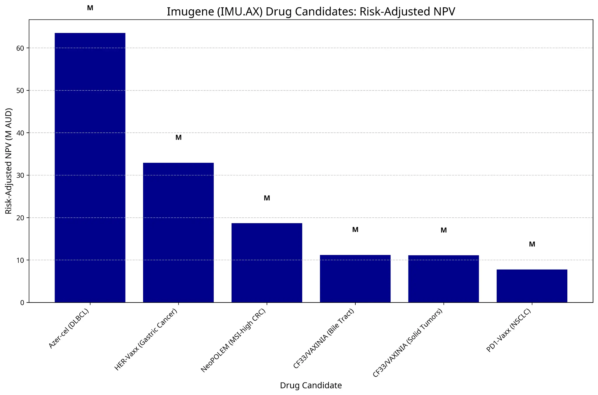
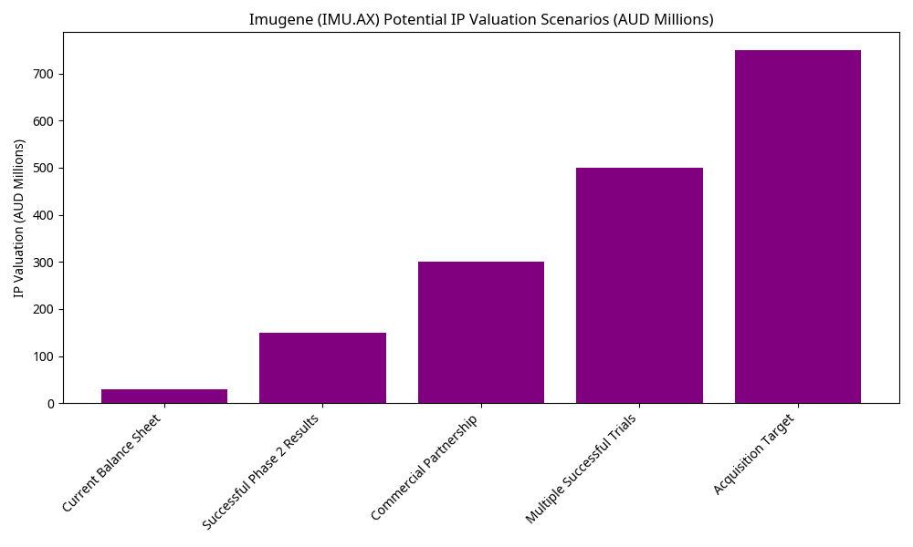
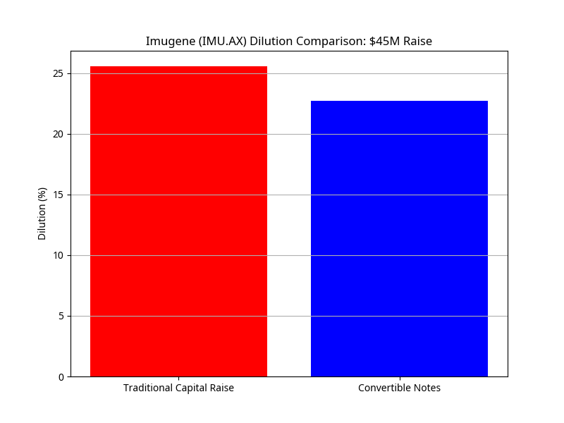

All Visualizations - Imugene (IMU.AX)
SWOT Analysis
This interactive SWOT analysis highlights Imugene's key strategic position in the biotech market:
Strengths
- Proprietary Immunotherapy Technology Targeting multiple cancer pathways simultaneously with unique mechanisms of action
- Strong Leadership Team Industry veterans with proven track record in biotech development and exits
- Diverse Pipeline Multiple drug candidates across different technology platforms
- Positive Early Clinical Data Encouraging efficacy and safety signals from lead candidates
- Substantial Cash Position $100M provides runway through multiple value-creating milestones
- Improving Sentiment Recent data and presentations have been well-received by market
Weaknesses
- Significant Cash Burn Rate $50M annually requires careful cash management
- History of Dilutive Capital Raises Previous financing rounds have diluted existing shareholders
- No Approved Products Lack of revenue streams creates dependency on capital markets
- Clinical Trial Dependency Future value heavily dependent on clinical trial outcomes
- Management Concerns Some investors have raised questions about financing practices
- Sector Valuation Compression Biotech sector experiencing general valuation pressure
Opportunities
- Positive Clinical Trial Results Could drive significant revaluation
- Acquisition Interest Potential target for larger pharmaceutical companies
- Partnership Deals Could provide non-dilutive funding
- Multiple Catalysts Expected in next 12-24 months
- Increasing Interest in Immunotherapies Growing market for novel cancer treatments
- Expanded Indications Could open larger market opportunities
Threats
- Market Skepticism About commercial viability of novel therapies
- Competitive Landscape Well-funded rivals pursuing similar approaches
- Clinical Trial Failures Could severely impact valuation
- Dilutive Financing Potential for further share dilution
- Regulatory Hurdles Approval delays could impact timeline
- Market Sentiment Toward small-cap biotech remains cautious
Radar chart visualization would be implemented here using a charting library like Chart.js.
This would show the relative strengths of each SWOT category in a radar/spider chart format.
| Factor | Imugene | Competitor A | Competitor B | Competitor C |
|---|---|---|---|---|
| Technology Platform | Multiple platforms | Single platform | Dual platforms | Single platform |
| Cash Position | $100M | $45M | $120M | $30M |
| Burn Rate | $50M/year | $20M/year | $60M/year | $15M/year |
| Clinical Stage | Phase 1/2 | Phase 1 | Phase 2/3 | Phase 1 |
| Market Cap | $220M | $150M | $450M | $100M |
| Partnerships | Limited | None | Multiple | One major |
Strategic Implications
Based on this SWOT analysis, several key strategic implications emerge for Imugene:
- Prioritize Azer-cel Development: As the most advanced and valuable asset, ensuring successful progression of Azer-cel through clinical trials should be the primary focus
- Pursue Partnership Opportunities: Actively seek pharmaceutical partnerships to provide validation and non-dilutive funding
- Optimize Cash Runway: Carefully manage burn rate to extend runway through key value-creating milestones
- Enhance Investor Communication: Improve transparency and frequency of updates to address market skepticism
Financial Visualizations
Cash Flow Projection
This chart shows Imugene's projected cash position over time, including burn rate and potential financing events.
Market Position
Market Cap Comparison
This chart compares Imugene's market capitalization with other Australian biotech companies (excluding CSL).

Technical Analysis
Share Price with Moving Averages
This chart shows Imugene's share price with 20-day, 50-day, and 200-day simple moving averages.
Short Interest vs Price
This chart shows the relationship between short interest and share price over time.
Valuation Models
Share Price Scenarios
This chart shows potential share price outcomes under different clinical and market scenarios.
NPV Scenarios
This chart shows the net present value (NPV) of Imugene under different clinical success probability scenarios.
Clinical Pipeline
Clinical Trial Timeline
This Gantt chart shows the timeline for Imugene's clinical trials across different drug candidates.
Drug NPV Comparison
This chart compares the risk-adjusted NPV of each drug candidate in Imugene's pipeline.
Other Visualizations
IP Valuation Scenarios
This chart shows the valuation of Imugene's intellectual property under different scenarios.
Dilution Comparison
This chart compares the dilutive impact of different financing options.
